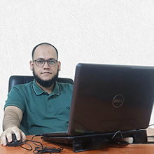

Assalamualaikum, I am Asif Mahmood.
I am a passionate technology enthusiast with a strong interest in web design, web applications, web content management, computer hardware and programming languages. I have developed effective communication skills and a continuous learning mindset. Through hands-on experience in both individual and group projects, my interest and competence in these areas have grown significantly. I am eager to contribute and grow in a dynamic, tech-driven environment.